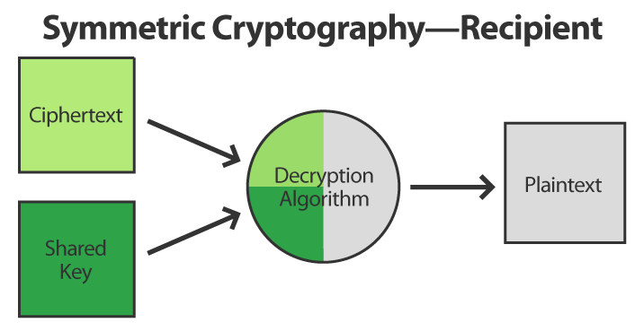

INTRODUCTION

In this era of universal electronic connectivity, the possibility of theft of information by hackers and eavesdroppers is very high.
There is indeed no time at which security does not matter. The tremendous growth in computer systems and their interconnections via networks have increased the dependence of organizations and individuals on the information stored and communicated using these systems.
There is a need to protect data and resources from disclosure and to protect systems from network based attacks. For secure communication over public network data can be protected by the method of encryption. Encryption converts that data by any encryption algorithm using the ‘key’ in scrambled form.
Only user having access to the key can decrypt the encrypted data. Encryption is a fundamental tool for the protection of sensitive information. The purpose of using encryption is privacy (preventing disclosure or confidentiality) in communications. The main goal of cryptography is keeping data secure from unauthorized users.
Original data that is readable and understandable either by a person or by a computer is called plain text whereas the data which is unreadable to human or machine is called cipher text. The technique to convert a plain text message into cipher text is called encryption (Paar and Pelzi, 2010).
Encryption is a way of talking to someone while other people are listening, but such that other people cannot understand what you are saying. Encryption algorithms play a big role in providing data security against malicious attacks. In mobile devices security is very important and different types of algorithms are used to prevent malicious attack on the transmitted data.
Encryption algorithm can be categorized into symmetric key (private) and asymmetric (public) key.
In Symmetric keys encryption or secret key encryption, only one key is used to encrypt and decrypt data. In Asymmetric keys, two keys are used; private and public keys (Davis, 2003).
Public key is used for encryption and private key is used for decryption (e.g. Rivest-Shamir-Adleman). According to (Elminaam et al., 2008), asymmetric encryption techniques are about 1000 times slower than Symmetric encryption which makes it impractical when trying to encrypt large amounts of data. Also to get the same security strength as symmetric, asymmetric must use a stronger key than symmetric encryption technique Public key encryption is based on mathematical function, computationally intensive and is not very efficient for small mobile devices (Alexandre et al., 2006).
The present scenario uses encryption which includes mobile phones, passwords, smart cards and DVDs. It has permeated everyday life and is heavily used by much web application. According to (Jeeva et al., 2012), Encryption algorithms play a vital role in information systems.
Some of the Encryption algorithms have been developed to make transmission and storage of data more secured and confidential. Different levels of securities are offered by different algorithms depending on how difficult it is to break them (Elminaam et al., 2010). If it is difficult to recover the plain text in spite of having substantial amount of cipher text then an algorithm is unconditionally secured.
Dhawan (2002) compared the performance of the different encryption algorithms by conducting experiments inside .NET framework.
This study provides evaluation of four of the most common encryption algorithms namely: Data Encryption Standard (DES), Triple Data Encryption Standard (3-DES), Advanced Encryption Standard (AES or Rijndael), and Rivest-Shamir-Adleman (RSA).